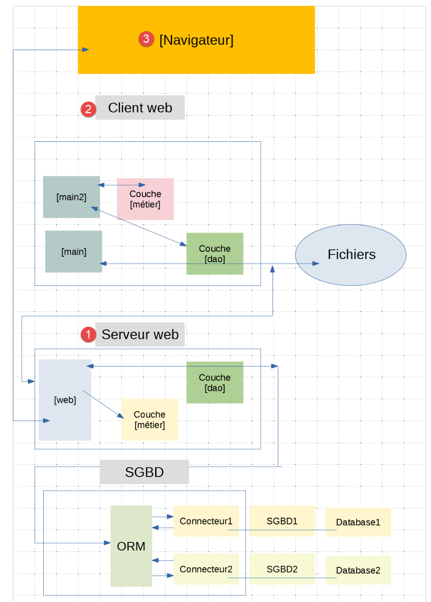
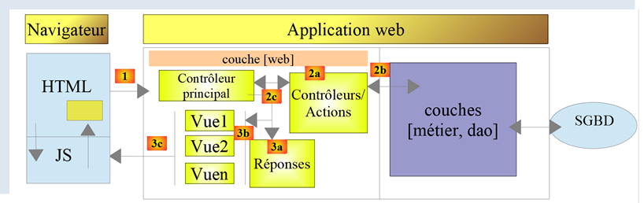

39. Conclusion
Rappelons le travail fait dans ce document :
Chapitre | Dossier | Contenu |
Présentation du cours | ||
Installation d’un environnement de travail | ||
[bases] | Les bases du langage Python – structures du langage – type de données – fonctions – affichage console – chaînes de formatage – changement de types – les listes – les dictionnaires – les expression srégulières | |
[strings] | Notation des chaînes de caractères – méthodes de la classe <str> - encodage / décodage des chaînes de caractères en UTF-8 | |
[exceptions] | Gestion des exceptions | |
[fonctions] | Portée des variables – mode de passage des paramètres – utiliser des modules – le Python Path – paramètres nommés – fonctions récursives | |
[fichiers] | Lecture / écriture d’un fichier texte – gestion des fichiers encodés en UTF-8 – gestion des fichiers jSON | |
[impots/v01] | Version 1 de l’exercice d’application, un calcul d’impôt sur les revenus. L’application est déclinée en 18 versions – La version 1 implémente une solution procédurale | |
[imports] | Gestion des dépendances d’une application par importation de modules – une méthode de gestion des dépendances est présentée – elle est utilisée dans tout le document – gestion du Python Path | |
[impots/v02] | La version 2 de l’application reprend la version 1 en rassemblant toutes les constantes de la configuration dans un fichier de configuration | |
[impots/v03] | La version 3 de l’application reprend la version 2 en utilisant des fonctions encapsulées dans un module – la gestion des dépendances est faite par configuration – introduction de fichier jSON pour lire les données nécessaires au calcul de l’impôt et écrire les résultats des calculs | |
[classes/01] | Classes – héritage – méthodes et propriétés – getters / setters – constructeur – propriété [__dict__] | |
[classes/02] | Présentation des classes [BaseEntity] et [MyException] utilisées dans le reste du document – [BaseEntity] facilite les conversions objet / dictionnaire | |
[troiscouches] | Architecture en couches et programmation par interfaces. Ce chapitre présente les méthodes de programmation utilisées dans le reste du document | |
[impots/v04] | Version 4 de l’application – cette version implémente une solution avec une architecture en couches, la programmation par interfaces, l’utilisation de classes dérivées de [BaseEntity] et [MyException] | |
[databases/mysql] | Installation du SGBD MySQL – connexion à la base de données – création d’une table – exécution d’ordres SQL SELECT, UPDATE, DELETE, INSERT – transaction – requêtes SQL paramétrées | |
[databases/postgresql] | Installation du SGBD PostgreSQL – connexion à la base de données – création d’une table – exécution d’ordres SQL SELECT, UPDATE, DELETE, INSERT – transaction – requêtes SQL paramétrées | |
[databases/anysgbd] | Ecrire du code indépendant du SGBD | |
[databases/sqlalchemy] | L’ORM (Object Relational Mapper) SqlAlchemy – un ORM permet de travailler de façon unifiée avec différents SGBD - mapping classes / tables SQL – opérations sur les classes images des tables SQL | |
[impots/v05] | Version 5 de l’application de calcul de l’impôt – Utilisation de l’architecture en couches de la version 04 et de l’ORM SqlAlchemy pour travailler avec les SGBD MySQL et PostgreSQL | |
[inet] | Programmation internet – protocole TCP / IP (Transfer Control Protocol / Internet Protocol) - protocoles HTTP (HyperText Transfer Protocol) – SMTP (Simple Mail Transfer Protocol) – POP (Post Office Protocol) – IMAP (Internet Message Access Protocol) | |
[flask] | Services web avec le framework web Flask – affichage d’une page HTML – service web jSON – requêtes GET et POST – gstion d’une session web | |
[impots/http-servers/01] [impots/http-clients/01] | Version 6 de l’exercice d’application - Création d’un service web jSON de calcul de l’impôt avec une architecture multicouche - Ecriture d’un client web pour ce serveur avec une architecture multicouche – programmation client / serveur – utilisation du module [requests] | |
[impots/http-servers/02] [impots/http-clients/02] | Version 7 de l’exercice de l’application – la version 6 est améliorée : le client et le serveur sont multithtreadés – utilitaires [Logger] pour loguer les échanges client / serveur – [SendMail] pour envoyer un mail à l’administrateur de l’application | |
[impots/http-servers/03] [impots/http-clients/03] | Version 8 de l’exercice d’application – la version 7 est améliorée par l’usage d’une session | |
[xml] | Gestion XML avec le module [xmltodict] | |
[impots/http-servers/04] [impots/http-clients/04] | Version 9 de l’exercice d’application – la version 8 est modifiée pour avoir des échanges client / serveur en XML ; | |
[impots/http-servers/05] [impots/http-clients/05] | Version 10 de l’exercice d’application – au lieu de traiter N contribuables par N requêtes GET, on utilise une unique requête POST avec les N contribuables dans le corps du POST | |
[impots/http-servers/06] [impots/http-clients/06] | Version 11 de l’exercice d’application – l’architecture client / serveur de l’application est modifiée : la couche [métier] passe du serveur au client | |
[impots/http-servers/07] | Version 12 de l’exercice d’application – cette version implémente un serveur MVC (Model – View – Controller) délivrant indifféremment, à la demande du client, du jSON, du XML et du HTML. Ce chapitre implémente les versions jSON et XML du serveur | |
[impots/http-clients/07] | Implémentation des clients jSON et XML du serveur MVC de la version 12 | |
[impots/http-servers/07] | Implémentation du serveur HTML de la version 12 – utilisation du framework CSS Bootstrap – | |
[impots/http-servers/08] | Version 13 de l’exercice d’application - Refactorisation du code de la version 12 – gestion de la session avec le module [flask_session] et un serveur Redis – utilisation de mots de passe cryptés | |
[impots/http-servers/09] [impots/http-clients/09] | Version 14 de l’exercice d’application – implémentation d’URL avec un jeton CSRF (Cross Site Request Forgery) | |
[impots/http-servers/10] | Version 15 de l’exercice d’application – refactorisation du code de la version 14 pour gérer deux types d’actions : ASV (Action Show View) qui ne servent qu’à afficher une vue sans modifier l’état du serveur, ADS (Action Do Something) qui font une action qui modifie l’état du serveur – ces actions se terminent toutes par une redirection vers une action ASV – cela permet de gérer correctement les rafraîchissements de page du navigateur client | |
[impots/http-servers/11] | Version 16 de l’application – gestion des URL avec préfixe | |
[impots/http-servers/12] | Version 17 de l’application – portage de la version 16 sur un serveur Apache / Windows | |
[impots/http-servers/13] | Version 18 de l’application – corrige une anomalie de la version 17 |
Les applications client / serveur du calcul de l’impôt ont implémenté l’architecture suivante :

La couche [web] ci-dessus a été implémentée avec une architecture MVC :

Le contenu du document est dense. Le lecteur qui ira jusqu’au bout aura une bonne vision de la programmation web MVC en Python / Flask et au-delà une bonne vision de la programmation web MVC dans d’autres langages.
On pourra trouver des informations complémentaires sur le framework Flask dans le document [https://blog.miguelgrinberg.com/post/the-flask-mega-tutorial-part-i-hello-world] de l’auteur Miguel Grinberg. J’ai lu quelques éléments de son cours et ceux-ci m’ont semblé très pédagogiques. L’auteur présente beaucoup de notions non abordées dans ce document.